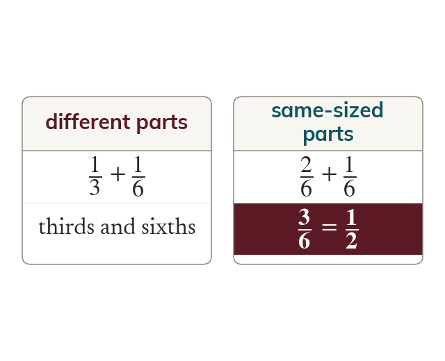
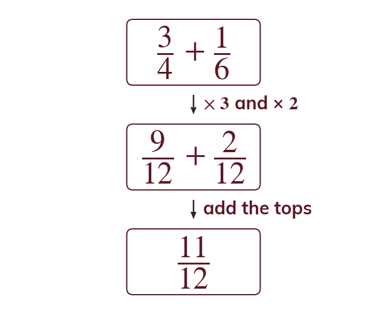
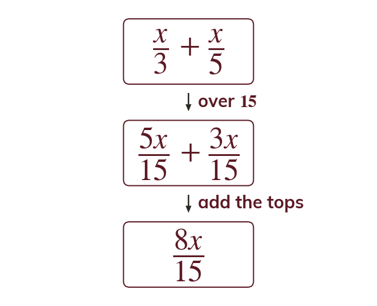
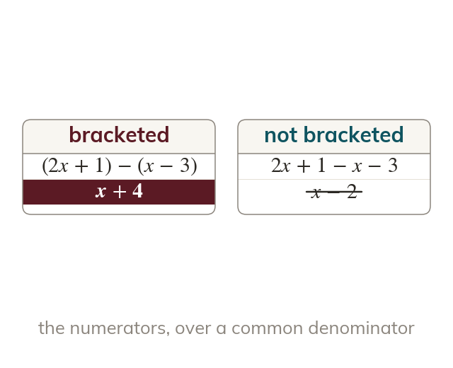

Same-sized parts only
Fractions add or subtract only over a common denominator. Only equal-sized parts can combine.
Fractions add or subtract only once they share a denominator, because only equal-sized parts can combine.
Fractions only combine once their parts are the same size, so adding or subtracting always starts by finding a common denominator.
Work down the page at your own pace. Write every answer in your book first, then click to check it.
Read each card, then follow the worked examples one step at a time.

Fractions add or subtract only over a common denominator. Only equal-sized parts can combine.

Scale each numerator by its own denominator's factor. Only then add or subtract the numerators.
Pick an answer. If it's wrong, the feedback tells you which mistake it was.
Read each card, then follow the worked examples one step at a time.

Algebraic numerators follow the same common-denominator rule. Only the numerators carry the letters.

When subtracting, bracket the whole second numerator first. Then every one of its terms changes sign.
Pick an answer. If it's wrong, the feedback tells you which mistake it was.
Finished? Next lesson: 9.12.4 Factorising to Cancel.
For each skill, tap the one that is true for you today. Your Revise pages start with anything you mark Not yet.
Your ratings are saved on this device only.
Log in, then search for a code to practise that skill.
Videos, worksheets and more on each part of this lesson.